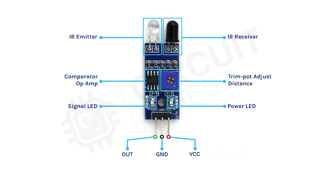
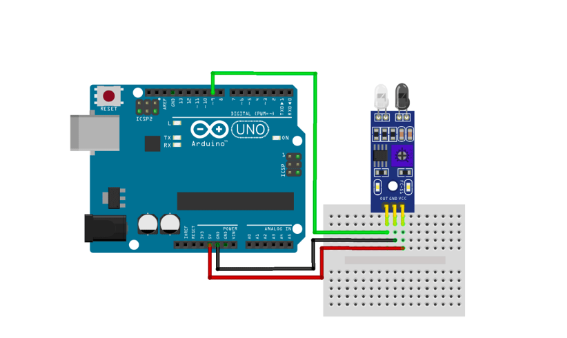

Introduction
An Infrared (IR) sensor module is a small electronic device that sends out and detects infrared light to understand its surroundings. These sensors are very common and are used in many different ways. You can find them in things like robots that need to avoid obstacles, robots that follow lines, and even in remote controls for TVs. This document is a complete guide to help beginners learn about IR sensor modules, how they work, and how to use them in different projects. Whether you are a student, a hobbyist, or just curious about electronics, this guide will help you get started with IR sensors.
1. What is an IR Sensor Module?
An IR sensor module is a device that uses infrared light to detect objects or measure distance. It typically consists of an IR LED (transmitter) and an IR photodiode or phototransistor (receiver). When the IR light emitted by the LED is reflected back to the receiver by an object, the module generates a signal that can be read by a microcontroller.
2. Overview of IR Sensor Module
The IR sensor module is a versatile component used for detecting objects, measuring distance, and many other applications. It typically comes in a small, easy-to-use package and includes the following key components:
Key Features
- IR LED (transmitter)
- IR receiver (photodiode or phototransistor)
- Operational amplifier (for signal processing)
- Potentiometer (for adjusting sensitivity)
- Output pins (digital and/or analog)
3. Pin Configuration
The IR sensor module usually has three pins: VCC, GND, and OUT. Some modules may have an additional analog output pin (AO).
Pins Description
- VCC: Power supply pin (usually 3.3V or 5V).
- GND: Ground pin.
- OUT: Digital output pin.
4. Working Principle
The IR sensor module works by emitting infrared light from the IR LED. When this light hits an object, it is reflected back to the IR receiver. The intensity of the received light is used to determine the presence or distance of the object.
Signal Processing
- The reflected IR light is detected by the receiver.
- The signal is then processed by the operational amplifier.
- The processed signal is sent to the digital output pin (OUT) or analog output pin (AO).
Sensitivity Adjustment
A potentiometer on the module allows for adjusting the sensitivity of the sensor. By turning the potentiometer, you can change the distance at which the sensor detects objects.
5. Wiring and Connections
To use the IR sensor module with a microcontroller like Arduino, follow these steps:
Components Needed
- IR Sensor Module
- Arduino Board
- Connecting Wires
Wiring Diagram
- Connect VCC to the 5V pin on the Arduino.
- Connect GND to the ground pin on the Arduino.
- Connect OUT to a digital pin on the Arduino (e.g., pin 2).
Example Schematic:
Arduino IR Sensor Module
-------------------------------
5V -> VCC
GND -> GND
Pin 2 -> OUT

6. Example Applications
Obstacle Detection
- Detecting obstacles in robotics.
- Automatic doors.
Line Following
- Line-following robots.
Proximity Sensing
- Proximity detection in various devices.
- Hand-sanitizer dispensers.
7. Code Examples for Arduino
Basic Example to Read Digital Output
const int sensorPin = 2;
int sensorValue = 0;
void setup() {
pinMode(sensorPin, INPUT);
Serial.begin(9600);
}
void loop() {
sensorValue = digitalRead(sensorPin);
Serial.println(sensorValue);
delay(100);
}
Basic Example to Read Analog Output
const int sensorPin = A0;
int sensorValue = 0;
void setup() {
Serial.begin(9600);
}
void loop() {
sensorValue = analogRead(sensorPin);
Serial.println(sensorValue);
delay(100);
}
8. Troubleshooting
Common Issues
- No output: Check power connections and ensure the sensor is properly connected.
- False detection: Adjust the sensitivity using the potentiometer.
- Inconsistent readings: Ensure there are no other sources of IR interference nearby.